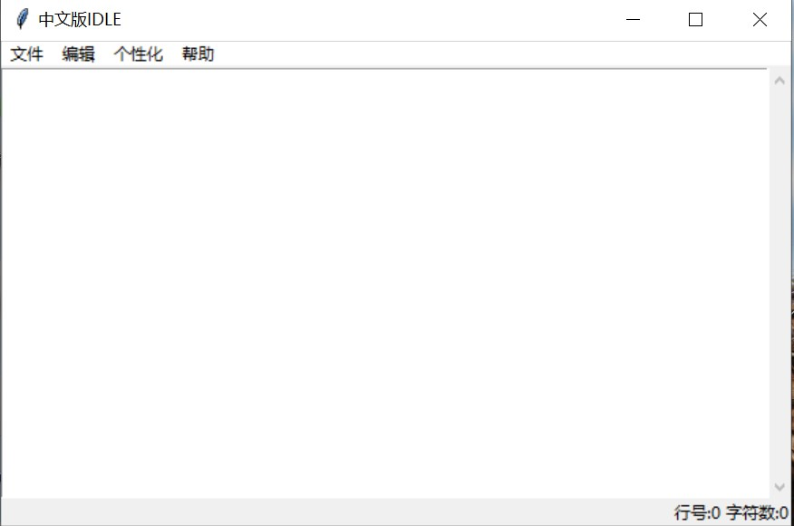

中文版IDLE

Windows
可用于Windows的光盘映像文件
macOS
适用于macOS的安装包（正在开发）
Linux、Unix
不好意思，现在我们不致力于来发这个版本的软件，如果您需要使用，您可以下载源码。如果您使用Visual Studio，您可以下载解决方案。
源码下载
如果您使用Python官方环境，那您可以下载源码，如果使用Visual Studio，可以下载解决方案
特别声明
1.因为开发条件的限制，可能部分程序无法运行。因为程序仍然在测试阶段，所以请用户谅解。
Copyright(c)zhihongwang250 2020